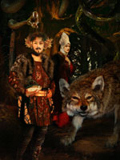

Локі, в скандинавської міфології шкідливий бог, підступний шахрай з асів, любитель змінювати облич. Він починав з пустощів і витівок, але з часом став справжнім втіленням зла і прискорив Рагнарек, загибель богів і всього світу.
Локі просто не міг втриматися, щоб не сплутовать і не поставити богів в скрутне становище. Однак його кмітливість часто виручала їх із смертельної небезпеки, взяти хоча б історію з викраденням берегині молодильні яблук Ідунн. Саме Локі винен у смерті светоносного бога Бальдра: він вручив несучу загибель стрілу з омели сліпому богу Хёду.
Часом Локі, рятуючись, готовий був пожертвувати життям будь-якого бога, як у випадку з громовніком Тором. Коли Локі заманив беззбройного Тора в чертог велетня ґейррьод, то лише позичені доброї велеткою Грід чудовий посох і залізні рукавиці врятували Тора від загибелі. Локі обдурив приятеля єдино тому, що така була ціна, призначена ґейррьод за його власне звільнення.
Необачно вбивши Отра в образі видри, Локі намагався умилостивити батька вбитого юнака, для чого йому довелося викрасти скарби злобного карлика-цверга.
Той же Локі придумав ризикований план, як роздобути молот Тора, вкрадений карликами і потрапив в руки велетня трюмі. Підступний бог дізнався, що за молот велетню потрібно віддати в дружини богиню родючості Фрей, і вмовив Тора відправитися до трюму в її одязі. Коли Трюм показав уявної нареченій молот, Тор в одну мить вихопив у нього свою зброю і вбив на місці всіх велетнів.
Боги мирилися з присутністю Локі в Асгарді навіть після того, як він підстроїв вбивство сина Одіна, Бальдра. Але коли Локі на бенкеті у морського велетня Егіри став мучити всіх своїми образами і насмішками, терпінню богів прийшов кінець. Намагаючись втекти від розлючених гостей, Локі перетворився в лосося, але з висоти Асгарда Один зауважив рибу, яка сховалася в водоспаді. Локі схопили і зв'язали кишками його власного сина, а велетень Скаді, дружина Ньерда, повісила над головою бога змію, виливає пекучий отрута, який капав йому на обличчя. Так він і чекав Рагнарек.
В останній битві богів і чудовиськ Локі мав очолити воїнство зла і зустріти смерть від руки бога Хеймдалля. Локі був одружений двічі, спочатку на велетці Ангрбоди, яка народила чудовиськ Фенрира, Ермунганда і Хель; всі троє успадкували темні сторони характеру батька. Другою дружиною була Сігунн, від якої у нього було двоє синів, Валі і Нарви. Незважаючи на всі злодіяння чоловіка, Сігунн залишилася вірна йому і полегшувала його страждання, підставивши чашу під капає отрута. Але коли чаша наповнювалася і дружина відходила спорожнити її, отрута капав на особу Локі, змушуючи його оточення здригатися, що за повір'ями було причиною землетрусів.